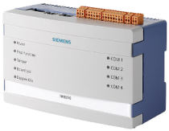

NK823x Hardware
The NK823x Ethernet port is a network adapter composed of an electronic board installed in a plastic box. Two models are available:
- NK8232, which supports 1 subsystem connection over RS232 line as well as onboard I/O.
- NK8235, which supports 2 (NK8235.2) or 4 (NK8235.4) subsystem connections over RS232 lines as well as onboard I/O.
RS232 lines are connected to 9-pin D-Sub connectors, receptacle type. All lines are fully RS232-compliant and have EMC/ESD protection. No galvanic isolation is provided. All lines have a common ground.
To connect to the management station, the NK823x Ethernet port is equipped with 2 standard RJ45 Ethernet connectors (only one of the 2 can be used for the moment).
